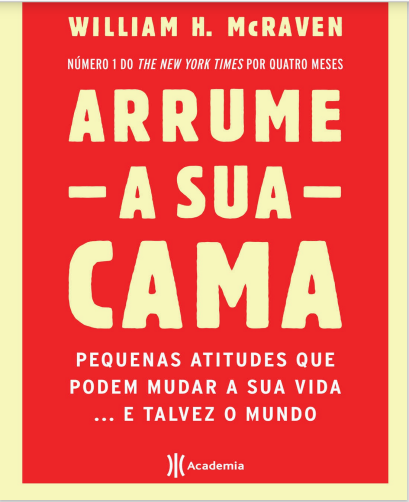

Arrume a sua cama
Em 21 de maio de 2014, tive a honra de proferir a aula inaugural dos alunos de graduação da Universidade do Texas, em Austin. Embora essa universidade seja minha alma mater, eu estava preocupado com a possibilidade de, sendo um oficial militar cuja carreira foi definida pela guerra, não encontrar boa acolhida entre os estudantes universitários. Mas, para minha enorme surpresa, os formandos abraçaram minha fala. Percebi que as dez lições que aprendi no treinamento das forças especiais da Marinha dos Estados Unidos, que eram a base de meu discurso, tinham um apelo universal. Eram simples lições que ensinam a superar os testes dos SEALS [1], mas que são igualmente importantes para enfrentar os desafios da vida – não importa quem você seja. Nos últimos três anos, tenho sido parado na rua por companheiros que me contam suas histórias: como escaparam de tubarões, por que não tocaram o sino, ou como arrumar a cama todas as manhãs os ajudou a superar tempos difíceis. Todos queriam saber como as dez lições me inspiraram durante minha carreira. Este livro é uma tentativa de responder a isso. Cada capítulo oferece o contexto das lições individuais e traz ainda uma curta história sobre algumas pessoas que me inspiraram com sua disciplina, perseverança, honra e coragem. Espero que gostem!
Baixar Livro